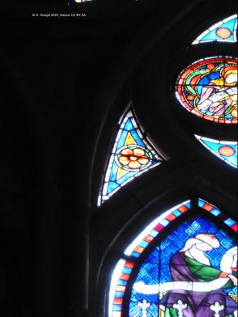
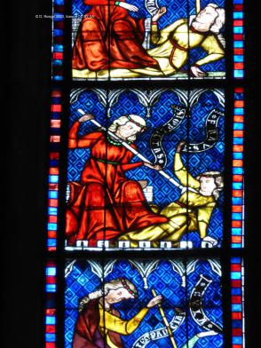

baie haut-nord-7 : La psychomachie (CV1986, p. 462)
 : Vue d'ensemble (CV1986, p. 469).
: Vue d'ensemble (CV1986, p. 469).- : Vue d'ensemble (CV1986, p. 469).
- : Vue d'ensemble de la partie supérieure.
- : Demi-médaillon circulaire : Vierge au trône de sapience (CV1986, p. 467). Panneaux périphériques : deux anges, Christ ravi par les anges et couronnement de la Vierge (CV1986, p. 467, 470).
- : Petite rose avec quatre panneaux en formes de lobes circulaires : Virginitas, Humilitas, Sollicitudo, Veregundia (CV1986, p. 470).
 : Écoinçon.
: Écoinçon. : Écoinçon.
: Écoinçon.- : Écoinçon.
 : Lancette c) Aristote et Humilitas - Superbia (CV1986, p. 466).
: Lancette c) Aristote et Humilitas - Superbia (CV1986, p. 466).-  : Lancette c) Fides - Idolatria (CV1986, p. 466) et Simplicitas - Fraus (CV1986, p. 465).
 : Lancette c) Temperencia - Gula et Justicia - Iniquitas (CV1986, p. 465).
: Lancette c) Temperencia - Gula et Justicia - Iniquitas (CV1986, p. 465). : Lancette c) Justicia - Iniquitas et Sapientia - Stultitia (CV1986, p. 465).
: Lancette c) Justicia - Iniquitas et Sapientia - Stultitia (CV1986, p. 465).- : Lancette c) Humilitas - Superbia (CV1986, p. 466).
 : Lancette c) Fides - Idolatria (CV1986, p. 466).
: Lancette c) Fides - Idolatria (CV1986, p. 466). : Lancette c) Simplicitas - Fraus (CV1986, p. 465).
: Lancette c) Simplicitas - Fraus (CV1986, p. 465). : Lancette c) Temperencia - Gula (CV1986, p. 465).
: Lancette c) Temperencia - Gula (CV1986, p. 465). : Lancette c) Justicia - Iniquitas (CV1986, p. 465).
: Lancette c) Justicia - Iniquitas (CV1986, p. 465).- : Lancette c) Sapientia - Stultitia (CV1986, p. 465).
 : Lancette d) Ezéchiel et Spes - Desperancia (CV1986, p. 466).
: Lancette d) Ezéchiel et Spes - Desperancia (CV1986, p. 466).- : Lancette d) Fortitudo - Accidia (CV1986, p. 466) et Concordia - Discordia (CV1986, p. 465).
-  : Lancette d) Concordia - Discordia et Castitas - Luxuria (CV1986, p. 465).
- : Lancette d) Largitas - Avaritia et Caritas - Invidia (CV1986, p. 465).
- : Lancette d) Spes - Desperancia (CV1986, p. 466).
 : Lancette d) Spes - Desperancia (CV1986, p. 466).
: Lancette d) Spes - Desperancia (CV1986, p. 466).- : Lancette d) Spes - Desperancia (CV1986, p. 466).
 : Lancette d) Fortitudo - Accidia (CV1986, p. 466).
: Lancette d) Fortitudo - Accidia (CV1986, p. 466). : Lancette d) Concordia - Discordia (CV1986, p. 465).
: Lancette d) Concordia - Discordia (CV1986, p. 465). : Lancette d) Castitas - Luxuria (CV1986, p. 465).
: Lancette d) Castitas - Luxuria (CV1986, p. 465).- : Lancette d) Largitas - Avaritia (CV1986, p. 465).
 : Lancette d) Caritas - Invidia (CV1986, p. 465).
: Lancette d) Caritas - Invidia (CV1986, p. 465).
Copyright D. Roegel, 2023.
 : Vue d'ensemble (CV1986, p. 469).
: Vue d'ensemble (CV1986, p. 469).{kind=link}
{kind=link}
{kind=link}
{kind=link}
 : Écoinçon.
: Écoinçon. : Écoinçon.
: Écoinçon.{kind=link}
 : Lancette c) Aristote et Humilitas - Superbia (CV1986, p. 466).
: Lancette c) Aristote et Humilitas - Superbia (CV1986, p. 466).{kind=link}
 : Lancette c) Temperencia - Gula et Justicia - Iniquitas (CV1986, p. 465).
: Lancette c) Temperencia - Gula et Justicia - Iniquitas (CV1986, p. 465). : Lancette c) Justicia - Iniquitas et Sapientia - Stultitia (CV1986, p. 465).
: Lancette c) Justicia - Iniquitas et Sapientia - Stultitia (CV1986, p. 465).{kind=link}
 : Lancette c) Fides - Idolatria (CV1986, p. 466).
: Lancette c) Fides - Idolatria (CV1986, p. 466). : Lancette c) Simplicitas - Fraus (CV1986, p. 465).
: Lancette c) Simplicitas - Fraus (CV1986, p. 465). : Lancette c) Temperencia - Gula (CV1986, p. 465).
: Lancette c) Temperencia - Gula (CV1986, p. 465). : Lancette c) Justicia - Iniquitas (CV1986, p. 465).
: Lancette c) Justicia - Iniquitas (CV1986, p. 465).{kind=link}
 : Lancette d) Ezéchiel et Spes - Desperancia (CV1986, p. 466).
: Lancette d) Ezéchiel et Spes - Desperancia (CV1986, p. 466).{kind=link}
{kind=link}
{kind=link}
{kind=link}
 : Lancette d) Spes - Desperancia (CV1986, p. 466).
: Lancette d) Spes - Desperancia (CV1986, p. 466).{kind=link}
 : Lancette d) Fortitudo - Accidia (CV1986, p. 466).
: Lancette d) Fortitudo - Accidia (CV1986, p. 466). : Lancette d) Concordia - Discordia (CV1986, p. 465).
: Lancette d) Concordia - Discordia (CV1986, p. 465). : Lancette d) Castitas - Luxuria (CV1986, p. 465).
: Lancette d) Castitas - Luxuria (CV1986, p. 465).{kind=link}
 : Lancette d) Caritas - Invidia (CV1986, p. 465).
: Lancette d) Caritas - Invidia (CV1986, p. 465).